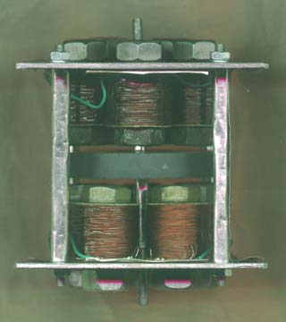

Низкооборотный многополюсный
электрогенератор
на кольцевом постоянном магните (6 полюсов, 10 обмоток)

Многополюсный низкооборотный однофазный генератор сконструирован для продолжения исследовательских работ по направлению "Альтернативные источники энергии: ветрогенераторы", а также для применения в практических приложениях. В основу конструкции положен принцип работы 6-полюсного низкооборотного электрогенератора [1]. Предварительно выполнены расчеты обмоток [2] и генератора в целом [3]. Опробованы некоторые новые технологические решения.
Конструкция электрогенератора
На квадратных стальных основаниях статора расположены по окружности катушки со стальными сердечниками (по 5 штук). В центре каждого основания установлен подшипник, в который вставляется вал. На валу с помощью втулки крепится кольцевой постоянный магнит из феррита бария типоразмера К60 х 24 х 9 с шестью полюсами, намагниченный аксиально в установке намагничивания [4]. Основания скреплены шпильками с распорными втулками таким образом, чтобы группы катушек были сдвинуты друг относительно друга на угол 36 градусов. Катушки генератора в одной группе соединены последовательно. Группы катушек также соединены последовательно, но при необходимости могут соединяться параллельно. На основаниях имеются крепежные отверстия для установки генератора или сборки нескольких генераторов в один блок.
Характеристики электрогенератора:
Электрические характеристики генератора достаточно хорошо соответствуют расчетным [3].
Ссылки:
17.11.2005
27.06.2006
18.11.2007
Альтернативные источники энергии
Компьютеры и
Интернет
Магнитные поля
Механотронные системы
Перспективные
разработки
Электроника и
технология